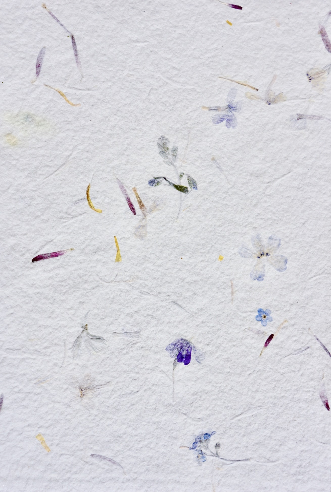

Buttermilk Creek began in the reed-soaked soil of northern New Brunswick, Canada, in a town called Centerville. The soaps and papers you see here are all made by hand, using safe, natural ingredients and plenty of hard work.
Soap
$X Per Bar / $X for 5 / ETC
Many varieties of soap substitute natural ingredients in order to save money with synthesized lye products. All of these soaps are made by hand.
The Varieties of Soap are as follows:
Pachouli
Farmer's
Cinnamon
Handmade Paper & Pressed Flowers
In addition to the soap, many types of homemade paper can be made upon request.

Paper Types:
Recycled (Plain)
Recycled & Flower Petals
Recycled & Foil
Recycled & Seed
Cotton
< Pressed Flowers (assorted) on flax and recycled paper.